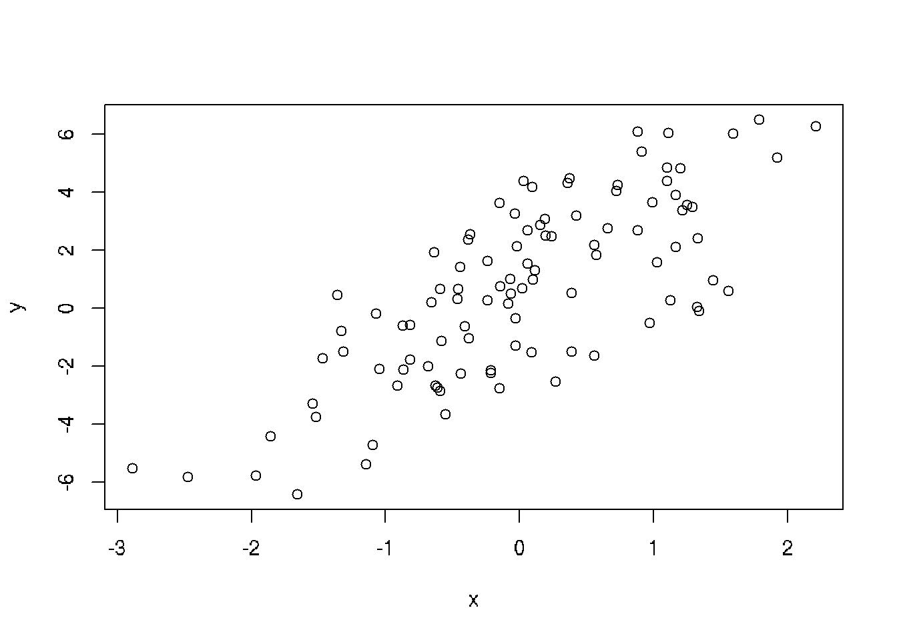

Chapter 19 Linear Regression
19.1 Generate Random Data Set a Linear Model
Suppose we want to simulate from the following linear model:
y = \(\beta\)0 + \(\beta\)1x + \(\epsilon\),
where \(\epsilon\) ~ N(0,22). Assume x ~ N(0,12), \(\beta\)0 = 0.5, \(\beta\)1 = 2.
set.seed(20)
x <-rnorm(100)
e <- rnorm(100, 0, 2)
y <- 0.5 + 2*x + e
summary(y)## Min. 1st Qu. Median Mean 3rd Qu. Max.
## -6.4084 -1.5402 0.6789 0.6893 2.9303 6.5052plot(x,y)
19.2 Linear regression - theory
Assume that there is approximately a linear relationship between X and Y:
\[ Y \approx \beta_0 + \beta_1X\]
where \(\beta\)0 is an intercept and \(\beta\)1 is a slope
Parameters of the line could be calculated using least squares methods:
\[\beta_1 = \frac{\sum_{i=1}^{n} (x_i - \bar{x})(y_i - \bar{y})}{\sum_{i=1}^{n}{(x_i - \bar{x})^2}} \] \[\beta_0 = \bar{y} - \beta_1\bar{x} \]
19.3 Practical example
Practical example from Wikipedia
Set of data: (1,6), (2,5), (3, 7), (4,10)

We have to find the line corresponding to the minimal sum of errors (distances from the each point to this line):
1. For all points:
\[\beta_1 + 1\beta_2 = 6\]
\[\beta_1 + 2\beta_2 = 5\]
\[\beta_1 + 3\beta_2 = 7\]
\[\beta_1 + 4\beta_2 = 10\]
the least squares S:
\[S(\beta_1, \beta_2) = [6 - (\beta_1 + 1\beta_2)]^2 + [5 - (\beta_1 + 2\beta_2)]^2 + [7 - (\beta_1 + 3\beta_2)]^2 + [10 - (\beta_1 + 4\beta_2)]^2 = 4\beta_1^2 + 30\beta_2^2 + 20\beta_1\beta_2 - 56\beta_1 - 154\beta_2 + 210\]
The minimum is:
\[\frac{\partial{S}}{\partial{\beta_1}} = 0 = 8 \beta_1 + 60\beta_2 - 154\]
\[\frac{\partial{S}}{\partial{\beta_2}} = 0 = 20 \beta_1 + 20\beta_2 - 56\]
Result in a system of two equations in two unkowns gives:
\[\beta_1 = 3.5\]
\[\beta_2 = 1.4\]
The line of best fit:
y = 3.5 + 1.4x
All possible regression lines goes through the intersection point \((\bar{x}, \bar{y})\)
19.4 Example of linear regression
x <- c(1,2,3,4)
y <- c(6,5,7,10)
lm(y~x)##
## Call:
## lm(formula = y ~ x)
##
## Coefficients:
## (Intercept) x
## 3.5 1.419.5 Standard error of train data
\[MSE = \frac{1}{n}\sum_{i=1}^{n}(y_i - \hat{f}(x_i))^2\] ## Standard error of learn data \[MSE = \frac{1}{n_o}\sum_{i=1}^{n_o}(y_i^o - \hat{f}(x_i^o))^2\]
19.6 Practical examples for linear model regression
In this simple example we have 6 persons (3 males and 3 femails) and their score from 0 to 10.
We want to build a model to see the dependence of score on gender: score ~ gender + \(\epsilon\), where \(\epsilon\) is an error
# create data frame for the dataset
df = data.frame(gender=c(rep(0,3), rep(1,3)), score=c(10,8,7, 1,3,2))
df## gender score
## 1 0 10
## 2 0 8
## 3 0 7
## 4 1 1
## 5 1 3
## 6 1 2# build linear model
x = lm(score ~ gender, df)
summary(x)##
## Call:
## lm(formula = score ~ gender, data = df)
##
## Residuals:
## 1 2 3 4 5 6
## 1.667e+00 -3.333e-01 -1.333e+00 -1.000e+00 1.000e+00 1.110e-16
##
## Coefficients:
## Estimate Std. Error t value Pr(>|t|)
## (Intercept) 8.3333 0.7454 11.180 0.000364 ***
## gender -6.3333 1.0541 -6.008 0.003863 **
## ---
## Signif. codes: 0 '***' 0.001 '**' 0.01 '*' 0.05 '.' 0.1 ' ' 1
##
## Residual standard error: 1.291 on 4 degrees of freedom
## Multiple R-squared: 0.9002, Adjusted R-squared: 0.8753
## F-statistic: 36.1 on 1 and 4 DF, p-value: 0.00386319.7 Practical examples for linear model regression
In this simple example we have 6 persons (3 males and 3 femails) and their score from 0 to 10.
We want to build a model to see the dependence of score on gender: score ~ gender + \(\epsilon\), where \(\epsilon\) is an error
# create data frame for the dataset
df = data.frame(gender=c(rep(0,3), rep(1,3)), score=c(10,8,7, 1,3,2))
df## gender score
## 1 0 10
## 2 0 8
## 3 0 7
## 4 1 1
## 5 1 3
## 6 1 2# build linear model
x = lm(score ~ gender, df)
summary(x)##
## Call:
## lm(formula = score ~ gender, data = df)
##
## Residuals:
## 1 2 3 4 5 6
## 1.667e+00 -3.333e-01 -1.333e+00 -1.000e+00 1.000e+00 1.110e-16
##
## Coefficients:
## Estimate Std. Error t value Pr(>|t|)
## (Intercept) 8.3333 0.7454 11.180 0.000364 ***
## gender -6.3333 1.0541 -6.008 0.003863 **
## ---
## Signif. codes: 0 '***' 0.001 '**' 0.01 '*' 0.05 '.' 0.1 ' ' 1
##
## Residual standard error: 1.291 on 4 degrees of freedom
## Multiple R-squared: 0.9002, Adjusted R-squared: 0.8753
## F-statistic: 36.1 on 1 and 4 DF, p-value: 0.00386319.8 NEXT part
# Linear regression modeling, compair with kNN
# Source: Course 'Math modeling' practical work, State University of Management, Moscow
# link: https://sites.google.com/a/kiber-guu.ru/r-practice/home
library('GGally')
library('lmtest')
library('FNN')
# константы
my.seed <- 12345
train.percent <- 0.85
# загрузка данных
fileURL <- 'https://sites.google.com/a/kiber-guu.ru/msep/mag-econ/salary_data.csv?attredirects=0&d=1'
# преобразуем категориальные переменные в факторы
wages.ru <- read.csv(fileURL, row.names = 1, sep = ';', as.is = T)
wages.ru$male <- as.factor(wages.ru$male)
wages.ru$educ <- as.factor(wages.ru$educ)
wages.ru$forlang <- as.factor(wages.ru$forlang)
# обучающая выборка
set.seed(my.seed)
inTrain <- sample(seq_along(wages.ru$salary),
nrow(wages.ru) * train.percent)
df.train <- wages.ru[inTrain, c(colnames(wages.ru)[-1], colnames(wages.ru)[1])]
df.test <- wages.ru[-inTrain, -1]
# Variable description
# salary – среднемесячная зарплата после вычета налогов за последние 12 месяцев (рублей);
# male – пол: 1 – мужчина, 0 – женщина;
# educ – уровень образования:
# 1 – 0-6 классов,
# 2 – незаконченное среднее (7-8 классов),
# 3 - незаконченное среднее плюс что-то ещё,
# 4 – законченное среднее,
# 5 – законченное среднее специальное, 6 – законченное высшее образование и выше;
# forlang - иност. язык: 1 – владеет, 0 – нет;
# exper – официальный стаж c 1.01.2002 (лет).
summary(df.train)
ggp <- ggpairs(df.train)
print(ggp, progress = F)
# цвета по фактору male
ggp <- ggpairs(df.train[, c('exper', 'male', 'salary')],
mapping = ggplot2::aes(color = male))
print(ggp, progress = F)
# цвета по фактору educ
ggp <- ggpairs(df.train[, c('exper', 'educ', 'salary')],
mapping = ggplot2::aes(color = educ))
print(ggp, progress = F)
# цвета по фактору forlang
ggp <- ggpairs(df.train[, c('exper', 'forlang', 'salary')],
mapping = ggplot2::aes(color = forlang))
print(ggp, progress = F)
# Linear regression model
model.1 <- lm(salary ~ . + exper:educ + exper:forlang + exper:male, data = df.train)
summary(model.1)
## Exclude uninfluencial parameters
# Exclude eper:educ as paramaeters are not important
model.2 <- lm(salary ~ . + exper:forlang + exper:male, data = df.train)
summary(model.2)
# Exclude male1:exper
model.3 <- lm(salary ~ . + exper:forlang, data = df.train)
summary(model.3)
# forlang1 is less important, has no sence
model.4 <- lm(salary ~ male + educ + exper, data = df.train)
summary(model.4)
df.train$educ <- as.numeric(df.train$educ)
df.test$educ <- as.numeric(df.test$educ)
model.6 <- lm(salary ~ ., data = df.train)
summary(model.6)
# Model 6 is week, let's add exper:male interactions
df.train$educ <- as.numeric(df.train$educ)
model.7 <- lm(salary ~ . + exper:male, data = df.train)
summary(model.7)
# Obviously the best decision is not to use interactions for modeling
# Test remainers
# тест Бройша-Пагана
bptest(model.6)
# статистика Дарбина-Уотсона
dwtest(model.6)
# графики остатков
par(mar = c(4.5, 4.5, 2, 1))
par(mfrow = c(1, 3))
plot(model.7, 1)
plot(model.7, 4)
plot(model.7, 5)
### Comparison with kNN-method
par(mfrow = c(1, 1))
# фактические значения y на тестовой выборке
y.fact <- wages.ru[-inTrain, 1]
y.model.lm <- predict(model.6, df.test)
MSE.lm <- sum((y.model.lm - y.fact)^2) / length(y.model.lm)
# kNN требует на вход только числовые переменные
df.train.num <- as.data.frame(apply(df.train, 2, as.numeric))
df.test.num <- as.data.frame(apply(df.test, 2, as.numeric))
for (i in 2:50){
model.knn <- knn.reg(train = df.train.num[, !(colnames(df.train.num) %in% 'salary')],
y = df.train.num[, 'salary'],
test = df.test.num, k = i)
y.model.knn <- model.knn$pred
if (i == 2){
MSE.knn <- sum((y.model.knn - y.fact)^2) / length(y.model.knn)
} else {
MSE.knn <- c(MSE.knn,
sum((y.model.knn - y.fact)^2) / length(y.model.knn))
}
}
# график
par(mar = c(4.5, 4.5, 1, 1))
plot(2:50, MSE.knn, type = 'b', col = 'darkgreen',
xlab = 'значение k', ylab = 'MSE на тестовой выборке')
lines(2:50, rep(MSE.lm, 49), lwd = 2, col = grey(0.2), lty = 2)
legend('bottomright', lty = c(1, 2), pch = c(1, NA),
col = c('darkgreen', grey(0.2)),
legend = c('k ближайших соседа', 'регрессия (все факторы)'),
lwd = rep(2, 2))